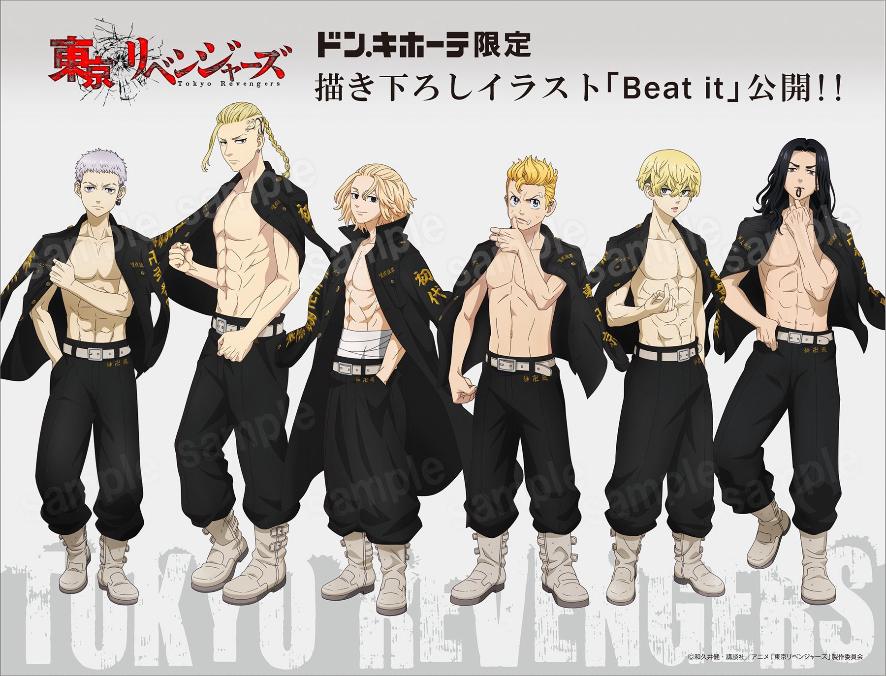
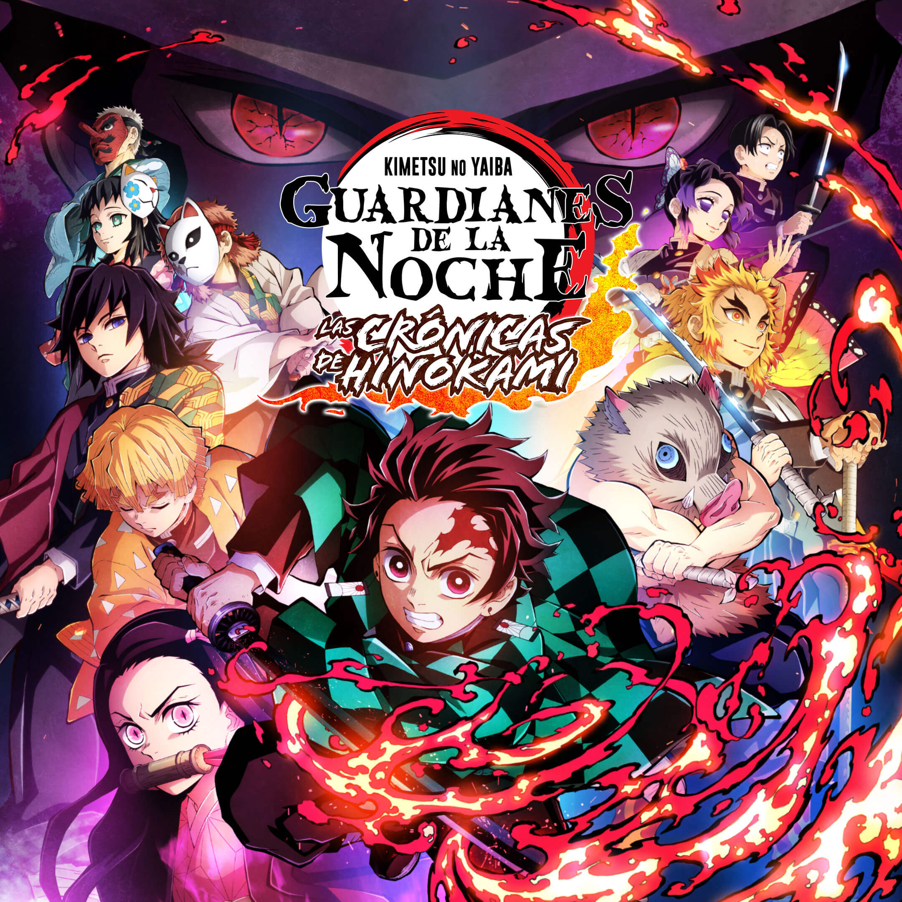
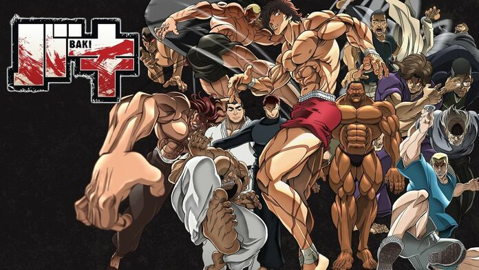

Here you will find the best animes that I have found in my life and that I will recommend in the following sections
Top 10
One Piece
1992-2017
One Piece es la historia de un chico llamado Monkey D. Luffy, un pirata que le salvó la vida, para convertirse en el Rey de los Piratas. Al comienzo de la serie, veinticuatro años antes de la historia actual, un pirata llamado Gol D. Roger.
Jujutsu Kaisen
1992-2017
Yūji Itadori vive en Sendai con su abuelo. Se une al Club de Investigación de lo Oculto, a pesar de poseer un talento innato para el deporte. Va a visitar a su abuelo moribundo al hospital todos los días. En su lecho de muerte.
Boku no Hero
1992-2017
La historia tiene lugar en un mundo donde el 80% de la población ha desarrollado «dones», surgiendo así héroes y villanos. Entre el 20% de personas sin dones, se encuentra Izuku Midoriya, cuyo mayor deseo es convertirse en un héroe.
One Punch Man
1992-2017
Esta historia gira alrededor de un héroe llamado Saitama. Todas las ciudades son atacadas por monstruos constantemente, y los héroes deben proteger a los habitantes con sus habilidades eliminando a cada uno de los enemigos.

Tokyo Revengers
1992-2017
Tokyo Revengers es un anime que sigue a Takemichi, un chicho que a sus 26 años cree que ya ha arruinado su vida. Viviendo a través de trabajos esporádicos lo suficientemente buenos como para pagar el alquiler.

Kimetsu No Yaiba
1992-2017
Tanjiro emprende un viaje arriesgado para buscar una cura a la maldición de su hermana y vengar a su familia asesinada por un demonio. Ve todo lo que quieras.
Hajime No Ippo
1992-2017
Ippo es un joven estudiante de preparatoria bastante introvertido que sufre el acoso en su colegio. Después de ser salvado por un boxeador llamado Takamura Mamoru, Ippo comienza a sentir fascinación por el mundo del boxeo.

Baki
1992-2017
El campeón de artes marciales Baki Hanma entrena para superar a su legendario padre, pero cinco reclusos del corredor de la muerte llegan a Tokio para desafiarle. Ve todo lo que quieras.Black Clover
1992-2017
Black Clover sigue la historia de dos chicos, Asta y Yuno, que crecen en un orfanato de la iglesia de Hage. Ambos se han criado en un mundo donde todas las personas tienen la habilidad de manipular el Poder Mágico.
Hunter x Hunter
1992-2017
La historia tiene como protagonista a Gon Freecss, un niño de doce años que desea encontrar a su padre a toda costa, por lo que decide convertirse en «cazador», justo como él, y de alguna forma hallar su paradero.@All rights reserved 2022
Jefferson Silva